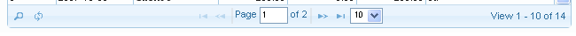
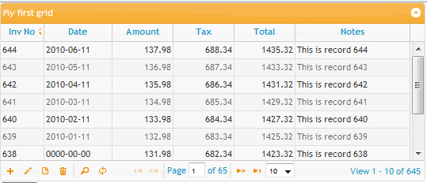
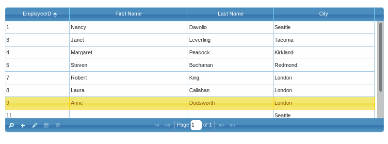

Navigationg
¶Pager¶
If your grid has only a few rows of data, then all the records will be viewable at the same time and you won't have to worry about navigating through pages of data.
But more likely, you will be dealing with large sets of data, and you'll want to display a small number of available records at a time. For this functionality, you will need the Navigation Bar.
Caution
Pager is currently disabled for TreeGrid
Note
The pager records are updated correct when addRowData/delRowData methods are used, but the paging by 10, 20 and etc rows does not update correct in case of using it. This is valid in case of local data. In order to update the number of records of the page correct in this case use reloading the grid after this operation trigger('reloadGrid').
Definition¶
The Navigation Bar, also known as the pager, is enabled by placing a <div> right after the <table> definition in your HTML. Note that it is a <div>, not a <table>. Then, you identify the <div> to your grid by placing the name of the div in the grid setting called "pager". It is necessary to have a id set for the pager div
First, the HTML definition. We'll name it jqGridPager:
.. <body> ... <table id="jqGrid"></table> <div id="jqGridPager"></div> ... </body>
Next, we'll identify jqGridPager to the grid:
jQuery("#grid_id").jqGrid({ ... pager : '#jqGridPager', ... });
The definition of the pager in the grid can be done this way:
pager : '#gridpager'
or
pager : 'gridpager'
or
pager : jQuery('#gridpager')
All the three methods are valid, but it is recommend to use the first or second one, since the jQuery variant causes problems when we try to use the pager in Exporting and Importing modules.
The definition in jqGrid options array tell that the pager should be a part of the grid and the width of the pager will equal of the width of the grid. In this case, the pager will be placed below the body of the gird. Note that in this case the pager element can have arbitrary position in the document and it will be placed instead above the grid body.
If you want to have custom pager you can use your own definition and not to set the pager options in the grid.
The pager when defined uses variables from language file. The English variant of these properties look like this (file grid.locale-en.js):
$.jgrid.regional["en"] = { defaults : { recordtext: "View {0} - {1} of {2}", emptyrecords: "No records to view", loadtext: "Loading...", savetext: "Saving...", pgtext : "Page {0} of {1}", pgfirst : "First Page", pglast : "Last Page", pgnext : "Next Page", pgprev : "Previous Page", pgrecs : "Records per Page", showhide: "Toggle Expand Collapse Grid" ... }, ... }

You can change these properties different ways depending on the needs.
- If you want globally to change these - i.e these changes will take effect in all created grids - you can do:
jQuery.extend(jQuery.jgrid.defaults,{emptyrecords: "Nothing to display",...});
or
jQuery.extend(jQuery.jgrid.regional["en"].defaults,{emptyrecords: "Nothing to display",...});
both are valid.
- If you want to change this only for a particular grid you can do:
jQuery("#grid_id").jqGrid({ ... pager : '#gridpager', emptyrecords: "Nothing to display", ... });
Normally, the pager placed so it appears at the bottom of the grid. A duplicate pager can also be enabled to appear at the top of the grid (above the header of the grid). In this case the option toppager should be set to true.
Normally when we create the pager we divide this element on three equal parts - left, center and right part. When you try to place additional information in the pager the pager try to fit the size. In case if you plan to place a lot of elements you should accordingly set the appropriate width of the grid.
By default the paging elements are placed at a center and the record information at right position of the pager. You can change these positions using the options pagerpos and recordpos - see below.
The icons that represent the pager buttons for navigating through the records are coded in the styleUI object. To change the icons when using jQueryUI CSS use:
styleUI : { jQueryUI : { ... base : { ... icon_first : "ui-icon-seek-first", icon_prev : "ui-icon-seek-prev", icon_next: "ui-icon-seek-next", icon_end: "ui-icon-seek-end", ... }, } }
Properties¶
The properties that are connected with the pager element are listed below:
| Property | Type | Description | Default | Can be Changed? |
|---|---|---|---|---|
| lastpage | integer | Gives the total number of pages returned from the request. If you use a function as datatype, jqGrid('setGridParam',{lastpage: your_number}); can be used to specify the max pages in the pager. |
0 | No |
| page | integer | Set the initial page number when we make the request.This parameter is passed to the url for use by the server routine retrieving the data. It also works when the datatype is local. | 1 | Yes |
| pager | html id | Defines the pager bar to navigate through the records. This must be a valid HTML element; in our example we gave the div the id of "pager", but any name is acceptable. Note that the navigation layer (the "pager" div) can be positioned anywhere you want, determined by your HTML; in our example we specified that the pager will appear after the body layer. The valid settings can be (in the context of our example) pager, #pager, jQuery('#pager'). We recommend to use the second one - #pager. See Pager for more details and explanations. If the pager is empty string (default value) it will not appear. | ' ' | No |
| pagerpos | string | Determines the position of the pager navigation buttons and records select box in the grid. By default the pager element when created is divided in 3 parts (one part for pager navigator buttons, one part for navigator buttons and one part for record information - see recordpos). Possible values are left, center, right. Note that when changing the position of this parameter it is necessary to change the position of the other elements. See Navigator options and the parameter recordpos below. | center | No |
| pgbuttons | boolean | Determines if the Pager buttons should be shown if pager is available. Also valid only if pager is set correctly. The buttons are placed in the pager bar. | true | No |
| pginput | boolean | Determines if the input box, where the user can change the number of the requested page, should be available. The input box appears in the pager bar between the pager buttons. | true | No |
| pgtext | string | Show information about current page status. We use for this purpose a template string. The default english string is: Page {0} of {1}. The first value '{0}' is the current loaded page. The second value '{1}' is the total number of pages. Default depend from the used language file | lang file | Yes |
| reccount | integer | Readonly property. Determines the exact number of rows in the grid. Do not confuse this with records parameter. Although in many cases they may be equal, there are cases where they are not. For example, if you define rowNum (requested records per page) to be 15, but the request to the server returns 20 records, the records parameter will be 20, but the reccount parameter will be 15 (the grid you will have 15 records and not 20). | 0 | No |
| recordpos | string | Determines the position of the record information in the pager ( See recordtext option). Can be left, center, right. If the default value is changed, be a sure that the other placement in 3 part pager are set in appropriate way. | right | No |
| records | integer | Read-only property. Gives the number of records returned as a result of a query to the server. | none | No |
| recordtext | string | Text that can be shown in the pager. This option is valid if viewrecords option is set to true. This text appears only if the total number of records is greater then zero. The default string in case of english langauage is as following: View {0} - {1} of {2}. {0} is the start position of the records depending on page number and number of requested records, {1} is the end position and {2} - total records returned from the server. | lang file | Yes |
| rowList | array | An array to construct a select box element in the pager in which we can change the number of the visible rows. When changed during the execution, the values of this parameter replaces the rowNum parameter that is passed to the url. If the array is empty, this element does not appear in the pager. Typically you can set this like [10,20,30]. If the rowNum parameter is set to 30 then the selected value in the select box is 30. The rowList parameter can have display value as string too. The select list can be configured with a name value pair where the value and display text will be separated with colon ":". By example the following ["10:10", "20:20", "30:30", "9999999:All"] will provide display items in select list 10,20,30,All and when All is selected the value of 9999999 will be posted. Set this number to be higher enough so that all the records will be obtained | empty | No |
| rowNum | integer | Sets how many records we want to view in the grid. This parameter is passed to the url (and in local data too) for use by the server routine retrieving the data. Note that if you set this parameter to 10 (i.e. retrieve 10 records) and your server return 15 then only 10 records will be loaded. | 20 | Yes |
| rowTotal | integer | When set this parameter can instruct the server to load the total number of rows needed to work on. Note that rowNum determines the total records displayed in the grid, while rowTotal determines the total number of rows on which we can operate. When this parameter is set, we send an additional parameter to the server named totalrows (See prmNames option). You can check for this parameter, and if it is available you can replace the rows parameter with this one. Mostly this parameter can be combined with loadonce parameter set to true. | null | Yes |
| toppager | boolean | When enabled this option places a pager element at top of the grid, below the caption (if available). If another pager is defined, both can coexist and are kept in sync (except adding custom buttons in navigator). The id of the newly created pager is the combination grid_id + "_toppager". All the buttons which are connected to the 'bottom' pager are valid for the top pager. This means that if by example pginput is true it will display on the toppager too. | false | No |
| viewrecords | boolean | If true, jqGrid displays the beginning and ending record number in the grid, out of the total number of records in the query. This information is shown in the pager bar (bottom right by default)in this format: "View X to Y out of Z". If this value is true, there are other parameters that can be adjusted, including emptyrecords and recordtext. | false | No |
All the properties that can be changed in the pager after creating the jqGrid object require reloading the grid. This is done via the trigger('reloadGrid'). Here is a example which change the number of requested rows to 10.
<script> ... jQuery("#grid_id").jqGrid('setGridParam',{rowNum:10}).trigger("reloadGrid"); ... </script>
Events¶
One event of the grid relates to the Pager:
onPaging( pgButton )
or triggered event
jqGridPaging( event, pgButtons )
This event fires after click on [page button] and before populating the data. Also works when the user enters a new page number in the page input box (and presses [Enter]) and when the number of requested records is changed via the select box. To this event we pass only one parameter pgButton (string) which can be - first,last,prev,next in case of button click, records in case when a number of requested rows is changed and user when the user change the number of the requested page. If the string 'stop' is returned from the function then the paging will be stopped.
Navigator¶
The Navigator is a user interface feature that allows easy accessibility to record actions such as Find or Edit. The user can activate a grid action by pressing the appropriate icon button in the Navigation layer.
Developers can create custom actions, or they can use any of the predefined actions that come with jqGrid. jqGrid provides icon button graphics for the predefined actions.
We have two types of navigators - navigator with Form Edit actions, named navGrid and navigator with Inline Edit actions named inlineNav.
Form Edit Navigator¶
(navGrd)
This is method which places a predefined actions in the pager bar.
Definition¶
The full set of predefined actions in this navigator are:
1) Add New Row, 2) Edit Selected Row, 3) View Selected Row, 4) Delete Selected Row, 5) Find Records, and 6) Reload Grid
The image below shows these six buttons in the bottom-left.

The Navigator is a jqGrid method. It's activated and configured by extending the main grid function, as shown in the code examples below. The full list of all possible configurable parameters is listed in the table below.
The built-in Navigator should be applied to the pager element. In other words, the pager element should be defined. The built-in Navigator actions correspond to the form editing actions. For more information and details refer to Form Editing.
HTML definition
... <body> ... <table id="list"></table> <div id="gridpager"></div> ... </body>
JavaScript code
<script> ... jQuery("#grid_id").jqGrid({ ... pager : '#gridpager', ... }); jQuery("#grid_id").jqGrid('navGrid','#gridpager',{parameters},prmEdit, prmAdd, prmDel, prmSearch, prmView); ... </script>
or in chained mode
<script> ... jQuery("#grid_id").jqGrid({ ... pager : '#gridpager', ... }).jqGrid('navGrid','#gridpager',{parameters}, prmEdit, prmAdd, prmDel, prmSearch, prmView); ... </script>
Where:
- grid_id - the id of the already constructed jqGrid.
- gridpager - the id of the navigation bar
- parameters - an array of settings, defined below
- prmEdit, prmAdd, prmDel, prmSearch, prmView are objects which holds the parameters and events for a particular action in Form editing
- prmEdit - these are the options for form editing dialog
- prmAdd - these are the options for form addinig dialog
- prmDel - these are the options for form deleting dialog
- prmSearch - these are the options for form single searching and advanced serching dialogs
- prmView - these are the options for form view dialog
Additionally to every particular module defined with prmEdit, prmAdd, prmDel, prmSearch, prmView a id parameter can be passed in order to identify the id of the button in the Navigator. If this id is not defined we use the combination of a prefix and the grid id. See below.
If the id of the button is not set we use the following rule:
For the add button we use “add_” + the id of the grid
For the edit button we use “edit_” + the id of the grid
For the delete button we use “del_” + the id of the grid
For the view button we use “view_” + the id of the grid
For the search button we use “search_” + the id of the grid
For the refresh button we use “refresh_” + the id of the grid
The code below defines a edit button with id myedit.
<script> ... jQuery("#grid_id").jqGrid({ ... pager : '#gridpager', ... }).jqGrid('navGrid','#gridpager',{}, {id:'myedit'}); ... </script>
The button and action can be disabled when a certain class is added for it. This class is defined in the common styleUI module with the name disabled:
styleUI : { jQueryUI : { common : { disabled: "ui-state-disabled", ... } } ... }
for Bootstrap
Bootstrap : { common : { disabled: "ui-disabled", } }
To make this cross CSS usable add the two classes at once. If the button has a id = myedit as of the example above use this code to disable it dynamically:
... $("#myedit", "#gridpager").addClass('ui-state-disabled ui-disabled');
Parameters¶
When we use the Navigator the following options are included from the language file.
$.jgrid.regional["en"] = { ... search : { ... }, edit : { ... }, view : { ... }, del : { ... }, nav : { edittext: "", edittitle: "Edit selected row", addtext:"", addtitle: "Add new row", deltext: "", deltitle: "Delete selected row", searchtext: "", searchtitle: "Find records", refreshtext: "", refreshtitle: "Reload Grid", alertcap: "Warning", alerttext: "Please, select row", viewtext: "", viewtitle: "View selected row", savetext: "", savetitle: "Save row", canceltext: "", canceltitle : "Cancel row editing", selectcaption : "Actions..." }, ... }
If you want to change the text that appears when a user hovers over a button, simply replace the text in the title string in the bottom part of the code below. For example: hover text for the view button is supplied by viewtitle: "View selected row"
For the particular options regarding the editing methods refer to Form Editing
The full list of parameters is listed below.
| Property | Type | Description | Default |
|---|---|---|---|
| add | boolean | Enables or disables the add action in the Navigator. When the button is clicked a editGridRow with parameter 'new' is executed | true |
| addicon | string | Set a icon to be displayed if the add action is enabled. The default icon is get from styleUI object - see navigator property | css def |
| addtext | string | The text than can be set in the add button | empty |
| addtitle | string | The title that appear when we mouse over to the add button (if enabled) | see lang file |
| afterRefresh | function | If defined this event fire after the refresh button is clicked. No parameters | null |
| alertcap | string | The header of the message that appear when we try to edit,delete or view a row without to select it | see lang file |
| alerttext | string | The message text that appear when we try to edit,delete or view a row without to select it | see lang file |
| alertwidth | number | The width in pixel of the alert window | 200 |
| alertheight | mixed | The height in pixel or % of the alert windows | auto |
| alerttop | integer | Top position of aler window | null |
| alertleft | integer | Left position of the alert window | null |
| alertzIndex | integer | zIndex of the alert window | null |
| beforeRefresh | function | If defined this event fire before the refresh button is clicked | null |
| cloneToTop | boolean | Clones all the actions from the bottom pager to the top pager if defined. Note that the navGrid can be applied to the top pager only. The id of the top pager is a combination of grid id and "_toppager". This action does not clone the custom added buttons. | false |
| closeOnEscape | boolean | Determine if the alert dialog can be closed if the user pres ESC key | true |
| del | boolean | Enables or disables the delete action in the Navigator. When the button is clicked a delGridRow method is executed. | true |
| delicon | string | Set a icon to be displayed if the delete action is enabled. The default icon is get from styleUI object - see navigator property | css def |
| deltext | string | The text than can be set in the delete button | empty |
| deltitle | string | The title that appear when we mouse over to the delete button (if enabled) | see lang file |
| dropmenu | boolean | If set to true convert the navigator buttons from the pager to popup menu with a button defined in navButtonText parameter. Use this feature in case if there is not enough space to have all the needed buttons on the pager. | false |
| edit | boolean | Enables or disables the edit action in the Navigator. When the button is clicked a editGridRow method is executed with parameter the - current selected row | true |
| editicon | string | Set a icon to be displayed if the edit action is enabled. The default icon is get from styleUI object - see navigator property | css def |
| edittext | string | The text than can be set in the edit button | empty |
| edittitle | string | The title that appear when we mouse over to the edit button (if enabled) | see ang file |
| navButton | text | The text of the button when dropmenu is set to true. The parameter from language file is selectcaption. | See lang file |
| position | string | Determines the position of the Navigator buttons in the pager. Can be left, center and right. | left |
| refresh | boolean | Enables or disables the refresh button in the pager. When the button is clicked a trigger("reloadGrid") is executed and the search parameters are cleared | true |
| refreshicon | string | Set a icon to be displayed if the refresh action is enabled. The default icon is get from styleUI object - see navigator property | css def |
| refreshtext | string | The text than can be set in the refresh button | see lang file |
| refreshtitle | string | The title that appear when we mouse over to the refresh button (if enabled) | see lang file |
| refreshstate | string | Determines how the grid should be reloaded firstpage - the grid reload the data from the first page. current - the reloading should save the current page and current selection | firstpage |
| search | boolean | Enables or disables the search button in the pager.When the button is clicked a searchGrid method is executed | true |
| searchicon | string | Set a icon to be displayed if the search action is enabled. The default icon is get from styleUI object - see navigator property | css def |
| searchtext | string | The text than can be set in the search button | empty |
| searchtitle | string | The title that appear when we mouse over to the search button (if enabled) | see lang file |
| view | boolean | Enables or disables the view button in the pager. When the button is clicked a viewGridRow method is executed | false |
| viewicon | string | Set a icon to be displayed if the search action is enabled. The default icon is get from styleUI object - see navigator property | css def |
| viewtext | string | The text that can be set in the view button | empty |
| viewtitle | string | The title that appear when we mouse over to the view button (if enabled) | see lang file |
| addfunc | function | If defined replaces the build in add function. No parameters are passed to this function | null |
| editfunc | function | If defined replaces the build in edit function. Parameter passed to this function is the id of the edited row | null |
| delfunc | function | If defined replaces the build in del function. Parameter passed to this function is the id of the edited row | null |
| searchfunc | function | If defined replaces the default search function in navigator. Parameter passed to the function is the object with the search parameter. | null |
| viewfunc | function | If defined replaces the build in view function. Parameter passed to this function is the id of the edited row | null |
More options¶
In some cases we need to have easy access to the navigator options and parameters of the editing. To do so we have created a grid option (note that this is a grid and not navigator option) called storeNavOptions see options
This is a boolean option and if set to true when the navigator is created it stores the navigator, editing and search options in the following grid options:
- navOptions- object where all the navigator objects are stored as grid option.
- editOptions - object where all the edit parameters passed in navigator are stored as grid option.
- addOptions - object where all the add parameters passed in navigator are stored as grid option.
- delOptions - object where all the delete parameters passed in navigator are stored as grid option.
- viewOptions - object where all the view parameters passed in navigator are stored as grid option.
- searchOptions - object where all the search parameters passed in navigator are stored as grid option.
- navButtons - array where all the custom buttons created with navButtonAdd are stored as grid option
The primary goal of creating this option is caused of creating the methods for saving/restoring the grid state - $.jgrid.saveState and $.jgrid.loadState where we have access only to the grid options. We do not store these options automatically because of saving memory.
Inline Edit Navigator¶
(inlineNav)
Definition¶
The inline navigator is similar to the form navigator except that a inline editing actions are used.
The full set of predefined actions in this navigator are:
1) Add New Row, 2) Edit Selected Row, 3) Save the Selected Row 4) Cancel saving the row
The image below shows these four buttons in the bottom-left.

The inline navigator require navGrid method to be called. If the method is not called it is called automatically from inline navigator method with all enabling options set to false.
Actually the inline edit navigator uses navButtonAdd method (see below) to define inline editing actions.
HTML definition
... <body> ... <table id="list"></table> <div id="gridpager"></div> ... </body>
JavaScript code
<script> ... jQuery("#grid_id").jqGrid({ ... pager : '#gridpager', ... }); jQuery("#grid_id").jqGrid('inlineNav','#gridpager',{parameters}); ... </script>
or in chained mode
<script> ... jQuery("#grid_id").jqGrid({ ... pager : '#gridpager', ... }).jqGrid('inlineNav','#gridpager',{parameters}); ... </script>
Where:
- grid_id - the id of the already constructed jqGrid.
- gridpager - the id of the navigation bar
- parameters - object containing all the definitions for the inline actions.
Additionally to every action button a id parameter is set. The unique id for every button is build as follow:
For the add button grid id + '_iladd'
For the edit button grid id + '_iledit'
For the save button grid id + '_ilsave'
For the cancel button grid id + '_ilcancel'
When the inlineNav method is called we store the parameters of method using the jQuery $.data function. The name of the data is the same as method. So after calling inlineNav method it is possible to get all the parameters:
var navparams = $("#grid_id").data('inlineNav');
The following options from language file are used when this method is called (English version):
$.jgrid.regional["en"] = { ... nav : { edittext: "", edittitle: "Edit selected row", addtext:"", addtitle: "Add new row", deltext: "", deltitle: "Delete selected row", searchtext: "", searchtitle: "Find records", refreshtext: "", refreshtitle: "Reload Grid", alertcap: "Warning", alerttext: "Please, select row", viewtext: "", viewtitle: "View selected row", savetext: "", savetitle: "Save row", canceltext: "", canceltitle : "Cancel row editing", selectcaption : "Actions..." }, ... }
Parameters inlineNav¶
The full list of parameters is listed below.
| Property | Type | Description | Default |
|---|---|---|---|
| add | boolean | Enables or disables the add action in the Navigator. When the button is clicked a addRow method with parameters addParams is executed | true |
| addicon | string | Set a icon to be displayed if the add action is enabled. The default icon is get from styleUI object - see navigator property | css def |
| addtext | string | The text than can be set in the add button | empty |
| addtitle | string | The title that appear when we mouse over to the add button (if enabled) | see lang file |
| addParams | object | Object containing the parameters when a row is added. For a full list of these options refer to Inline addRow method | empty |
| cancel | boolean | Enables or disables the cancel button in navigator. When button is clicked the current edited row is restored to its initial state | true |
| cancelicon | string | Set a icon to be displayed if the cancel action is enabled. The default icon is get from styleUI object - see navigator property | css def |
| canceltext | string | The text than can be set in the cancel button | empty |
| canceltitle | string | The title that appear when we mouse over to the cancel button (if enabled) | see lang file |
| edit | boolean | Enables or disables the edit action in the Navigator. When the button is clicked a editRow method is executed with parameter editParams object and the id of current selected row | true |
| editicon | string | Set a icon to be displayed if the edit action is enabled. The default icon is get from styleUI object - see navigator property | css def |
| edittext | string | The text than can be set in the edit button | empty |
| edittitle | string | The title that appear when we mouse over to the edit button (if enabled) | see ang file |
| editParams | object | Object containing the parameters when a row is edited. For a full list of these options refer to Inline editRow method | empty |
| restoreAfterSelect | boolean | true means that when editing one row and select another the first edited row is restored to its initial state instead of changed values. See option saveAfterSelect. | true |
| save | boolean | Enables or disables the save button in the navigator. When the button is clicked all the changes in the current edited fields are stored. | true |
| saveAfterSelect | boolean | true means that when editing one row and select another the first edited row is saved with the new changes. | false |
| saveicon | string | Set a icon to be displayed if the save action is enabled. The default icon is get from styleUI object - see navigator property | css def |
| savetext | string | The text than can be set in the save button | see lang file |
| savetitle | string | The title that appear when we mouse over to the save button (if enabled) | see lang file |
Custom buttons¶
Custom Buttons are a way to define your own button and action in the pager. In order to create a custom buttons a navGrid method first needs to be called.
Definition¶
Calling Convention:
<script> ... jQuery("#grid_id").jqGrid('navGrid',"#pager",...).jqGrid('navButtonAdd',"#pager",{parameters}); ... </script>
The default parameters are
{ caption:"NewButton", buttonicon:"ui-icon-newwin", onClickButton:null, position: "last", title:"", id : "", cursor: "pointer" }
where
- caption: (string) the caption of the button, can be a empty string.
- buttonicon: (string) is the ui icon name from UI theme icon set. If this option is set to “none” only the text appear.
- onClickButton: (function) action to be performed when a button is clicked. Default null.
- position: (“first” or “last”) the position where the button will be added (i.e., before or after the standard buttons).
- title: (string) a tool-tip for the button.
- cursor : string (default pointer) determines the cursor when we mouse-over the element
- id : string (optional) - if set defines the id of the button (actually the id of TD element) for future manipulation
Multiple buttons can be added by continuing the chain.
Separator¶
It is possible to group some action adding separator. This can be done using the navSeparatorAdd method
Syntax:
<script> ... jQuery("#grid_id").jqGrid('navGrid',"#pager",...) .jqGrid('navButtonAdd',"#pager",{parameters}) .jqGrid('navSeparatorAdd',"#pager",{separator_parameters}); ... </script>
The default separator_parameters are
{ sepclass : "ui-separator", sepcontent: '' }
Where:
- sepclass represent the separator class defined in ui-jqgrid. You can customize your own class
- sepcontent the content that can be put in the separator element